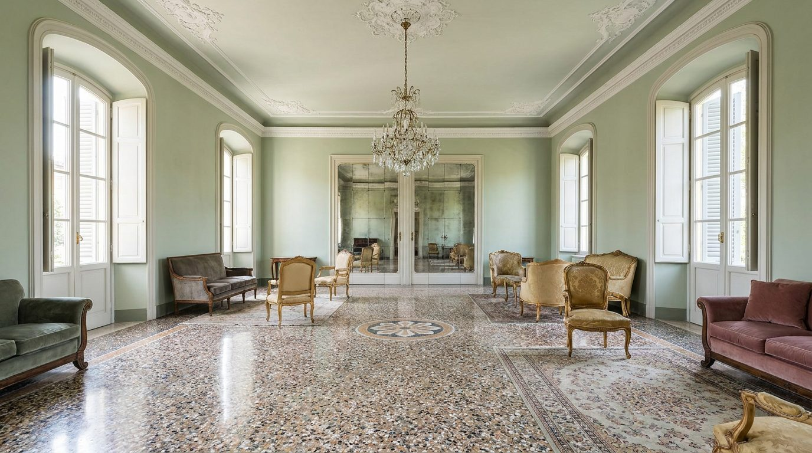

Atlante · IT-15 · Italia · Nord
Villa neoclassica / barocchetto emiliano
Esempi · esterno e interno


Architettura · elementi riproducibili
- saloni di rappresentanza 5-6 m, stucchi bianchi su pareti pastello, colonne e lesene, pavimento alla veneziana, porte a specchio, grandi finestre con persiane
- altezza finestre 3-3,5 m
- Proporzione: stanze larghe il doppio dell'altezza, molta parete libera (ideale per testiere e madie).
Luce
doppia esposizione, luce ampia e morbida, nessun controluce violento.
Prompt di generazione (EN)
Emilian neoclassical villa salon, 5.5 m ceiling with white stucco cornices, pale sage-green walls, Venetian terrazzo floor, mirrored double doors, tall shuttered windows, soft even daylight from two sides, 28 mm, pastel grade with warm wood furniture.